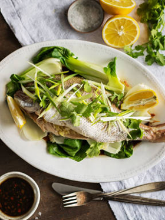

<div class='cards-container' >
  <mat-card class="card-recepie" id='card' fxLayout="column" fxLayoutAlign="space-between center" >
    <!--  -->
    <div class="preview-header"[routerLink]="['/recipe', recipe.slug]">
      <i class="material-icons btn-play">play_circle_outline</i>
    </div>
    <div class="preview-footer"  fxLayout="row" fxLayoutAlign="space-between end" >
      <div fxLayout="row">
          <i class="material-icons btn-like" (click)="toogleFavorite()">favorite_border</i>
          <span class="footer-text">{{recipe.favoritesCount}}</span>
      </div>

      <div>
        <span class="footer-text">33 min.</span>
      </div>

    </div>
  </mat-card>
  <div class="text-under" [routerLink]="['/recipe', recipe.slug]">
    Reteta lu Marean: 5 ingrediente pentru un mic dejun al oamenilor de succes
  </div>
</div>


